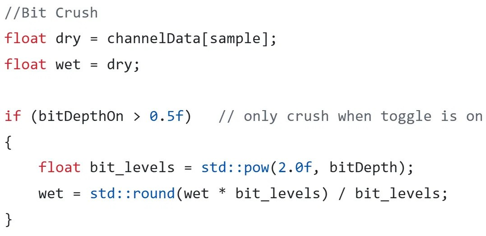
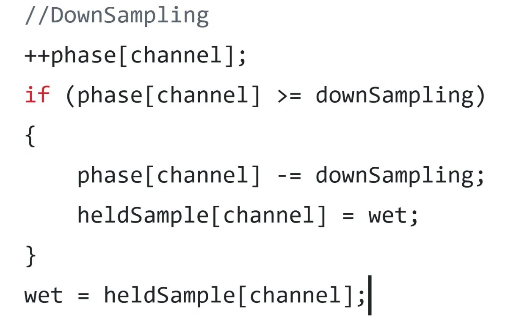

Project
BitCrusher Plugin
I love the sound of videogame music, specifically that 8-bit charm you hear in old games, or even in games like Undertale and Deltarune (side note: if you want to hear me yap for hours, mention either of these games and I will talk about the lore, the music, and everything in between). So I wanted to research how the effect works and then build my own plugin implementing those algorithms.
A BitCrusher lowers the quality of an audio signal through two mechanisms: bit depth and sample rate.
Bit depth
Each slice of audio records a value, and the precision of that value is the bit depth (the value is stored in binary). Reducing the bit depth changes the waveform by adding harmonics and reduces the dynamic range: the more you lower it, the more the sample starts to look like a square wave, and it can even bring up the volume of the noise floor.
How the Bitcrusher Algorithm works: bitcrusher simpy reduces the amplitude resolution of an audio signal. An audio wave's amplitude is represented by foating point numbers between [-1.0 - 1.0]. Then, that sample is multiplied by our bit_level and rounded. Then we scale it back down between -1.0 and 1.0 by dividing it by the bit_level. It's a little more abstract to see but I think it makes more sense with numbers. Say our bit depth is 3. that means our bit_levels = 8 since 2^3 is 8. If we multiply an amplitude that is 0.30, we get 2.4 When we round it, it goes to 2. Then we divide it by 8 again, and this bring it down to .250. Thus we have reduced the value of our amplitude.

Interactive bitcrusher: a smooth sine wave overlaid with its quantized staircase output, with an adjustable bit-depth slider.
TDrag the slider to see how it works
Sample rate
The sample rate is the number of slices taken of a signal per second. 44.1kHz to 48kHz is pretty common. To record a note properly you need a sample rate at least twice the frequency of the note (the Nyquist limit), which captures the two peaks of the waveform and its frequency. Reducing the sample rate (downsampling) means higher frequencies become too large for the sample rate and get misinterpreted as lower frequencies. This is known as aliasing. A low-pass filter can avoid that and give you a cleaner distortion.
Downsampling is an effect meant to reduce the sample rate, by outputting previous values instead of new ones. Like bit_depth, it is a way to reduce the resolution of an audio signal except this time it reduces the time resolution rather than the a wave's amplitude. It works like a counter, where the output waveform only updates on every Nth sample, where downsampling = N. We basically just have a counter for each channel that checks if we hit the downsampling number. When we do, we reset the counter and then we update the new output waveform with the new sample

Downsampling — sample & hold
Drag the factor and watch the smooth sine freeze into flat held steps. Dots mark where a fresh value is captured; the flat runs between them are that value repeated.
The Dry/Wet mix
The mix knob is a dry/wet control. Dry is the raw, unprocessed signal before any effects; wet is the signal after being processed. The knob controls how much of the effect is applied — but it doesn't change how the audio is processed, it just determines how much of the wet and dry signals are mixed together at the output.
The progression isn't linear. From 0–50%, the raw dry sound stays the same while the wet sound increases from 0 to 100%. From 50–100%, the wet sound stays the same while the dry signal decreases from 100% to 0%. So as you turn the knob up, you introduce more of the effect while reducing the volume of the unprocessed signal.